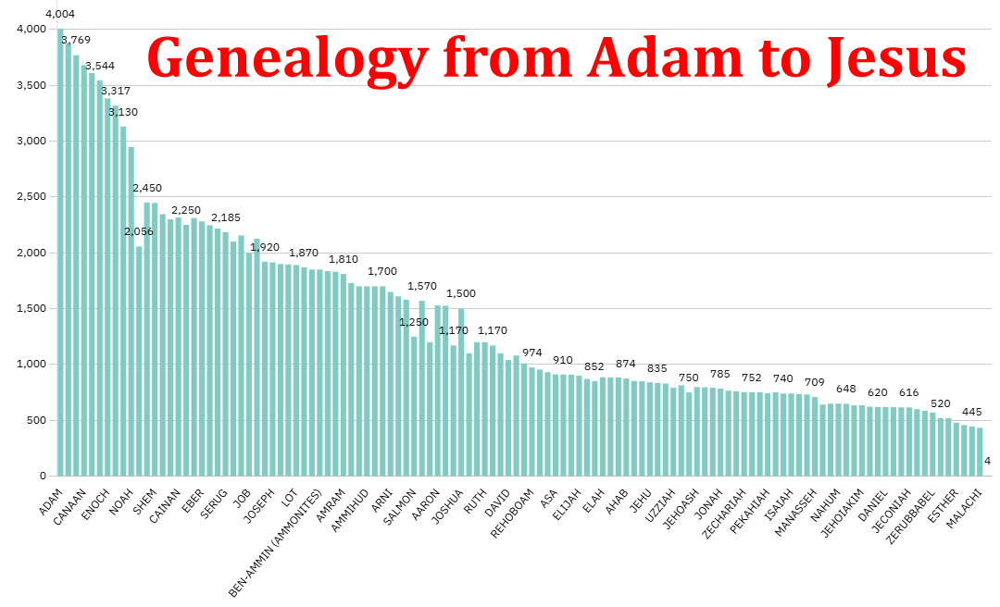

Happy Thursday — a special day, it turns out, on three fronts: a day to reflect on Einstein's Theory of Relativity, a day to reflect on our Declaration of Independence, and a day to look at the genealogical timeline of Old Testament saints.
I spent a little more time this morning building out a small database with the approximate birth and death dates for each of them. I wanted to turn it into a stacked bar chart with a shaded portion for how long each person lived, but ran into some formatting problems along the way. More importantly, I got the supporting data into Google Sheets so I can keep building it out. My hope is to eventually be able to search or filter by Kings, Prophets, Priests, Judges, and the major dispensations of God's redemption plan, and have the chart adjust automatically.

I still need to figure out how to adjust the x-axis so I can see all the names — right now the chart only labels every third person, so I need a row or two underneath to fill in the names in between. I also need to move the bar for Abraham closer to Job and Joseph.
If anyone wants to add significant dates they know of, I'm happy to give edit access to the sheet:
Comments